Ici, vous retrouverez quelques chantiers de tôlerie de l'Atelier K :
Karmann 1957 "Lowlight", Colmar (68)
Chantier achevé en mai 2025
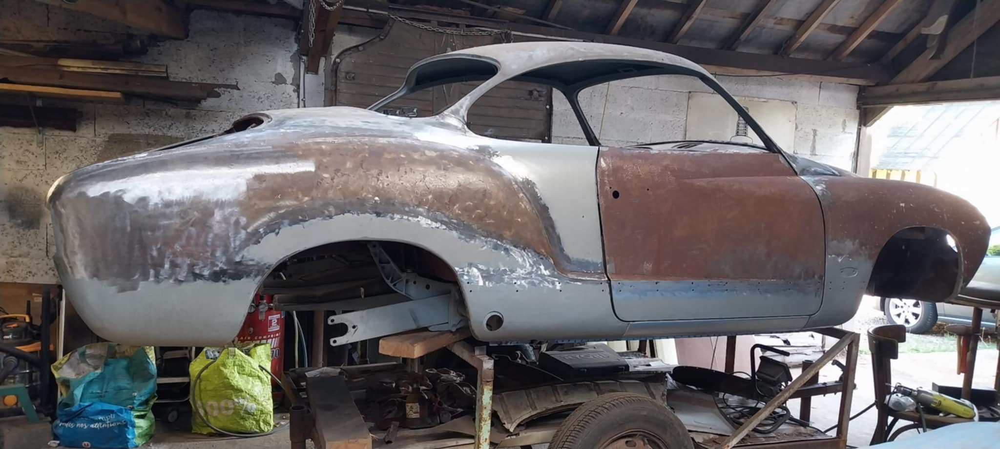
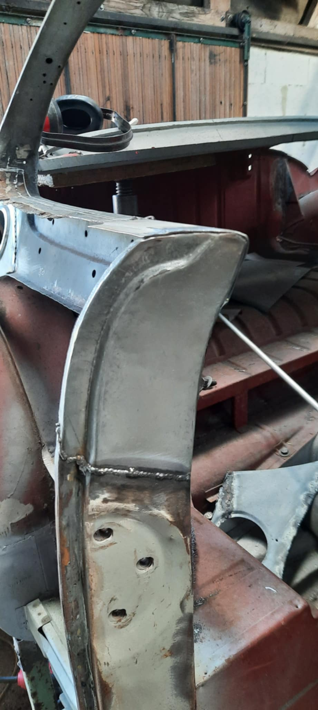
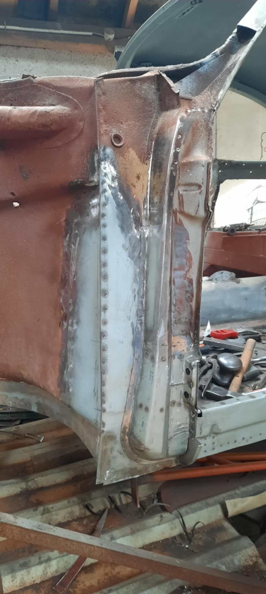
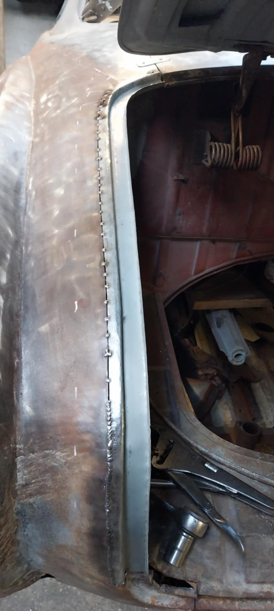
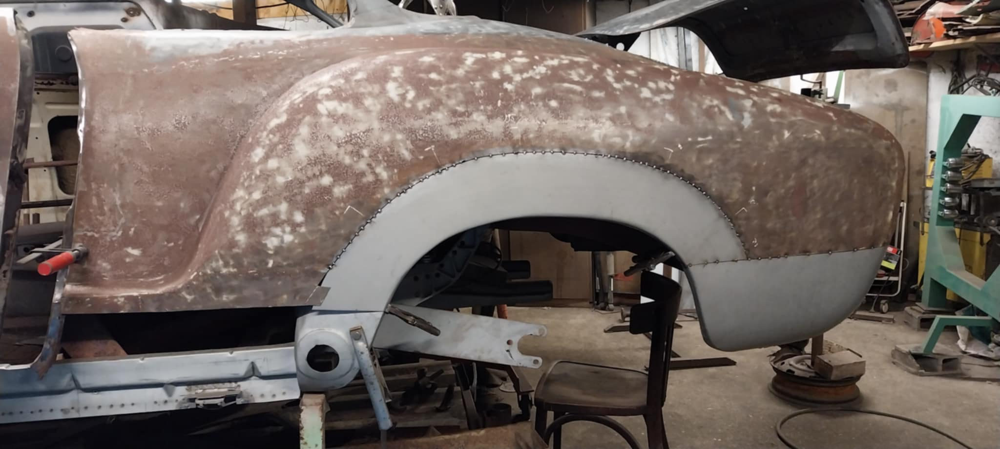
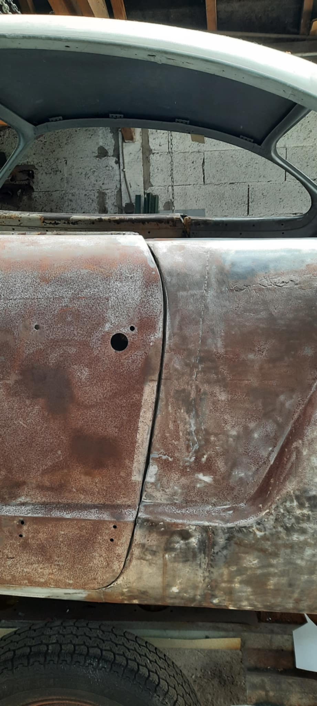
Véhicule importé du Portugal avec une ancienne restauration de mauvaise qualité, restauration intégrale et remise en ligne de la carrosserie.
Par le passé, le toit avait été changé suite à un accident, or les réparations ont été mal effectuées et les portes ne fermaient plus.
Karmann Cabriolet 1968, Lannion (22)
Chantier achevé en septembre 2022
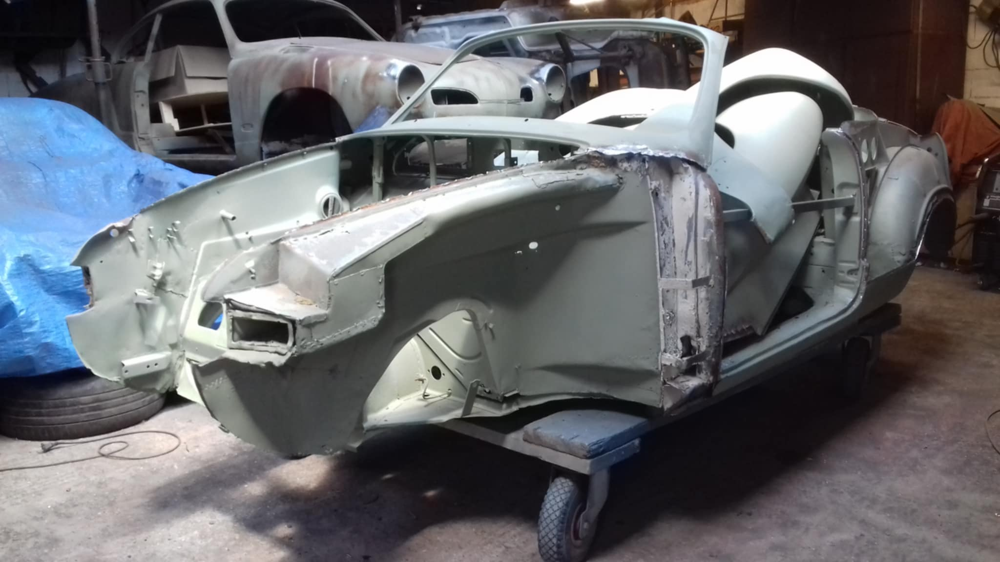
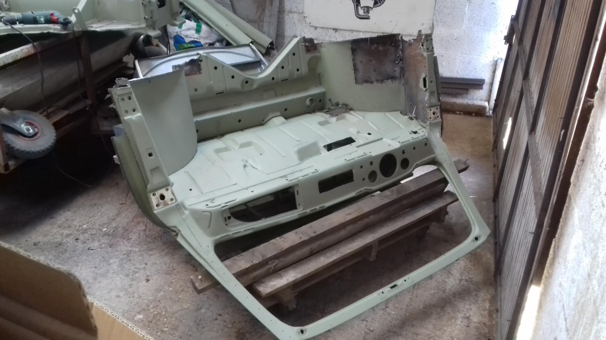
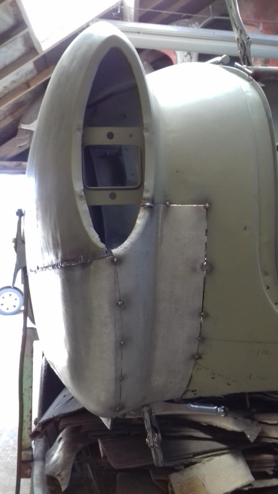
Voiture d'origine allemande, importée d'Espagne, ayant subi un "maquillage", en certains endroits de la carrosserie, plusieurs
tôles se chevauchaient pour cacher la rouille toujours présente.
Karmann Coupé 1972, Rouen (76)
Chantier achevé en octobre 2021
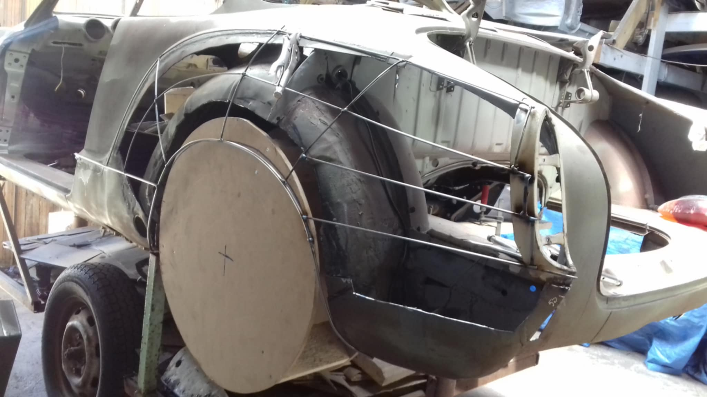
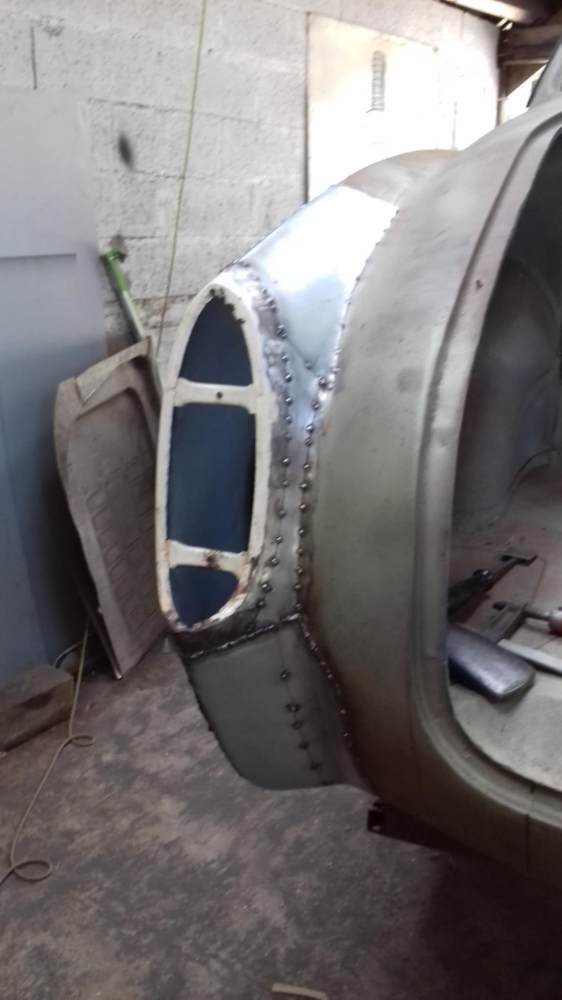
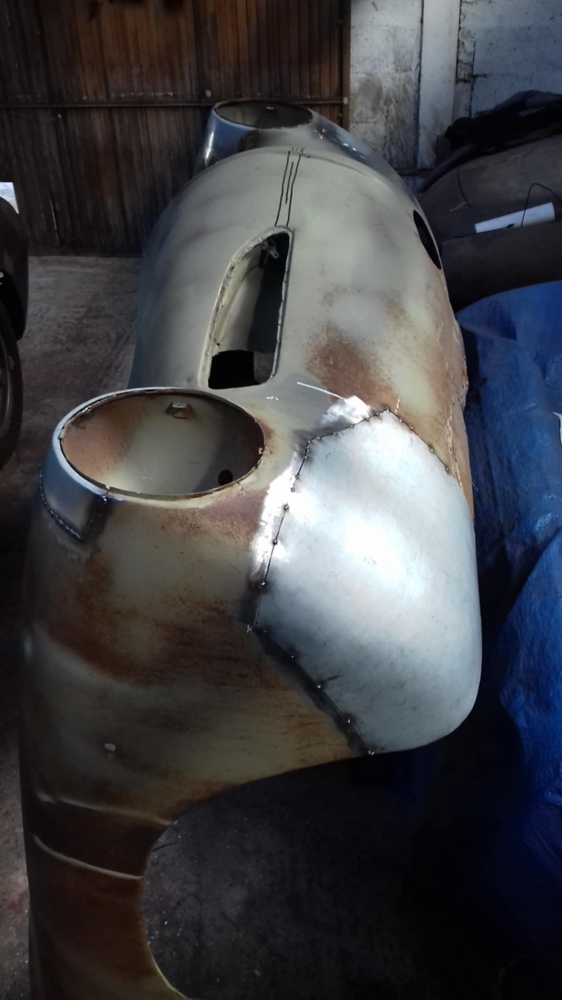
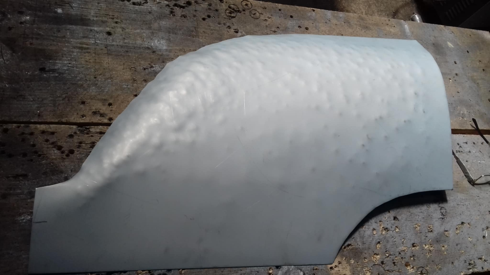
Reprise de la restauration effectuée au préalable par le client et modifications esthétiques des ailes arrière pour installer des roues arrière
plus larges.
Porsche 911 L 1967, Tours (37)
Chantier achevé en octobre 2020
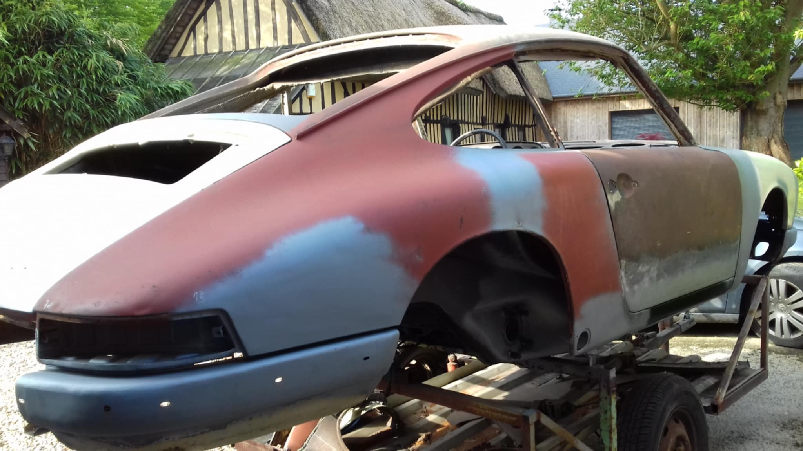
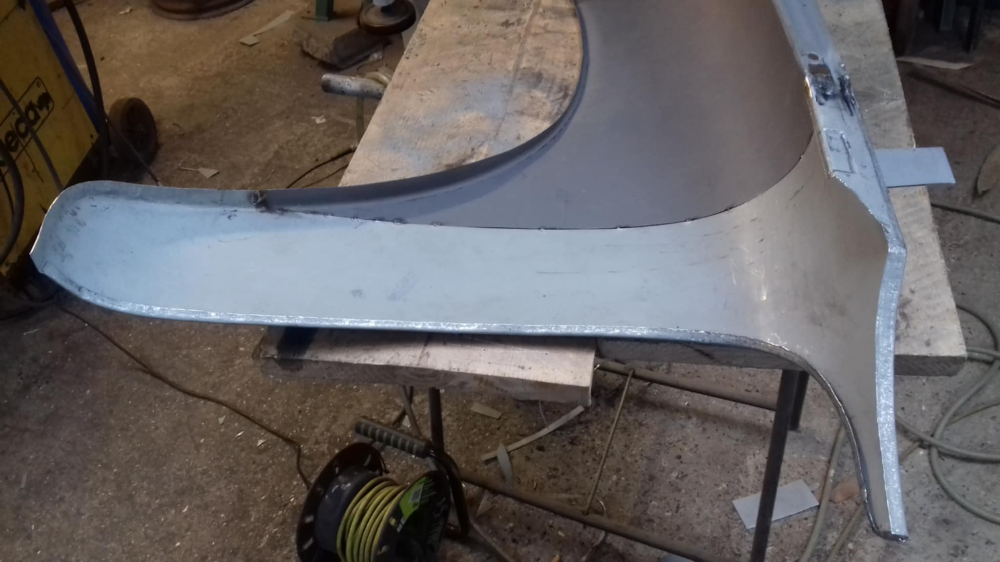
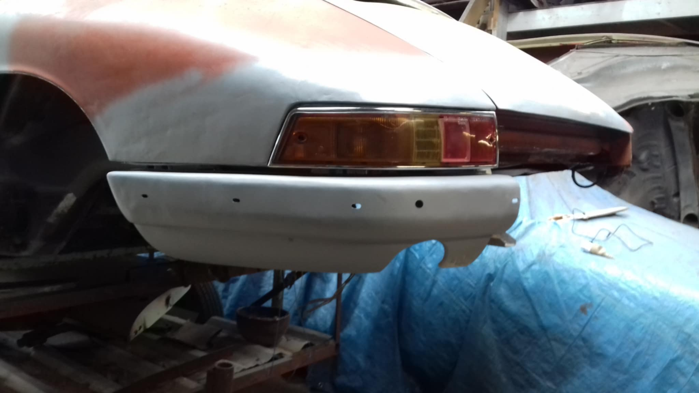
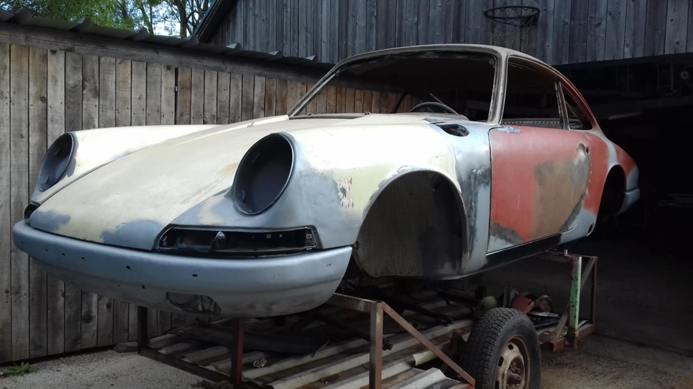
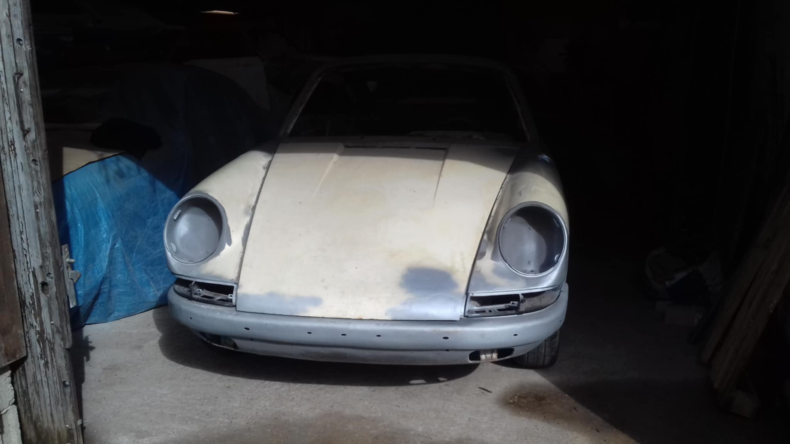
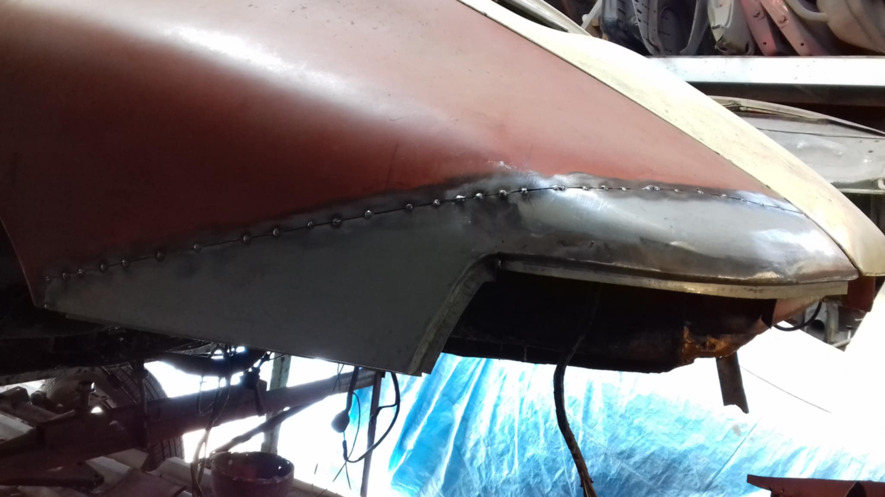
Véhicule stocké par le client pendant plus de 20 ans, la voiture était dans son "jus" mais très corrodée.